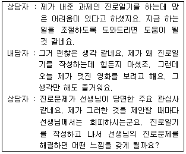
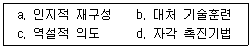
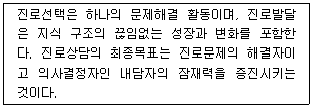
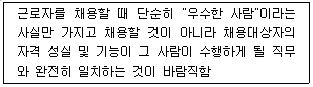
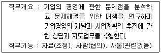
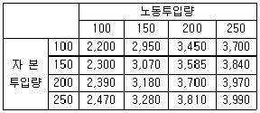

직업상담사-2급(구) (2004-08-08 기출문제)
1과목: 직업상담ㆍ심리학
1. 작업동기이론의 대두는 호오손 연구에서 출발한다. 호오손 연구에서 생산성에 가장 중요한 영향을 미치는 것으로 밝혀진 것은 무엇인가?
- 작업장의 물리적 환경
- 작업장의 규모
- 근로자의 개인적 능력
- 작업장면의 사회적 환경
(정답률: 알수없음)

2. 신입사원을 대상으로 부서 배치 후 6개월 이내에 자신이 도달하고 싶은 미래의 모습을 경력목표로 정하고 목표에 도달하기 위한 계획을 작성, 제출하도록 하여 자율적으로 경력목표를 달성할 수 있도록 지원하는 것은 다음 중 어디에 해당하는가?
- 경력워크숍
- 직무순환
- 사내 공모제
- 기술목록
(정답률: 알수없음)
3. 다음 중 직무 분석 문항에 포함되지 않는 것은?
- 정신 건강의 정도
- 절친한 동료 종업원의 수
- 그 직무에서 전환 가능한 직무명
- 같은 직무에 종사하는 종업원의 수
(정답률: 알수없음)
4. 다음 중 생애진로사정의 구조에 포함되지 않는 것은?
- 진로사정
- 강점과 장애
- 훈련 및 평가
- 전형적인 하루
(정답률: 알수없음)
5. 직업상담의 상담목표 설정에 관한 설명 중 올바른 것은 ?
- 상담목표 설정은 상담전략 및 개입의 선택과 관련이 없다.
- 하위목표들을 명확히 하여 가능한 구체적으로 설정되어야 한다.
- 내담자 기대나 가치와 어긋나더라도 상담자의 전문가적인 식견에 따라 설정되어야 한다.
- 현실적이기보다 가능한 궁극적인 변화를 가져올 수 있는 원대한 목표이어야 한다.
(정답률: 알수없음)
6. 성인의 직업발달에 대한 이론 중 로(Roe)의 이론과 홀랜드(Holland)의 이론 간의 차이는 ?
- 로는 생애공간이론에 심취했으며, 홀랜드는 생애발달단계이론에 중점을 두었다.
- 로는 흥미를 기초로 한 직업분류체계를 제시하였고 홀랜드는 여섯가지 성격 기본유형을 가정하고 이론을 전개하였다.
- 로는 직업이 기본욕구들을 충족시켜 준다는데 착안하였고, 홀랜드는 각 직업에서의 곤란도와 책무성을 고려하여 이론을 전개하였다.
- 로는 흥미의 육각형모형을 제시했으며, 홀랜드는 직업 선호도검사, 직업탐색검사 등을 통해서 접근하였다.
(정답률: 알수없음)
7. 다음의 상담내용을 읽고 인지적 명확성을 위하여 사용되는 기법은?

- 구체화시키기
- 역설적 사고
- 재구조화
- 저항에 다시 초점 맞추기
(정답률: 알수없음)
8. 직업상담사의 역할이 아닌 것은?
- 직업정보분석
- 각종 심리검사실시 및 해석
- 직업지도 프로그램 운영
- 취업알선 및 봉급조정
(정답률: 알수없음)
9. 직무 스트레스를 촉진시키거나 완화하는 조절요인이 아닌 것은 ?
- A/B 성격유형
- 통제 위치(LOCUS OF CONTROL)
- 사회적 지원
- 매우 반복적이고 단조로운 직무
(정답률: 알수없음)
10. 성인기의 직업 전환을 촉진하는 요인에 대한 설명으로 부적절한 것은?
- 전체 노동인구 중 젊은 층의 비율이 적을수록
- 경제구조가 완전고용의 상태일 경우
- 단순직 근로자의 비율이 높을 경우
- 여성근로자의 비율이 높은 경우
(정답률: 알수없음)
11. 앞으로의 경력개발(Career Development) 방향과 관련 없는 것은?
- 수평이동
- 평생직업
- 다양한 능력개발
- 장기고용
(정답률: 알수없음)
12. 소점(素点)이나 표준 점수의 분포에서 적성의 유무를 판정하는 기준 점수는 무엇인가?
- 추정점수
- 절단점수
- 상관점수
- 오차점수
(정답률: 알수없음)
13. 직업심리학에서 주로 이용하는 현장연구에 대한 설명으로 맞는 것은?
- 가외변수 통제 하에 독립변수를 조작하여 종속변수에 미치는 영향을 관찰한다.
- 자연상태에서 독립변수를 조작하여 종속변수에 미치는 영향을 관찰한다.
- 정확한 측정과 반복관찰을 통해서 확신할 만한 결과를 얻을 수 있다.
- 자연상태에서 질문지나 면접을 이용하여 응답자의 자기-보고 반응을 측정한다.
(정답률: 알수없음)
14. 윌리암슨이 주장한 상담의 과정은?
- 분석-종합-진단-예후-상담-추수지도
- 진단-분석-종합-예후-상담-추수지도
- 진단-상담-분석-종합-예후-추수지도
- 분석-진단-상담-종합-예후-추수지도
(정답률: 알수없음)
15. 자아개념을 중심으로 자아와 일의 세계에 대한 정보 부족과 일치성 부족으로 내담자의 부적응이 발생한다고 보는 상담이론은?
- 발달적 직업상담
- 행동주의 직업상담
- 특성요인 직업상담
- 내담자 중심 직업상담
(정답률: 알수없음)
16. 인지행동적 접근에 포함되는 주된 상담과정으로 올바른 것은?

- a, b
- b, c
- c, d
- b, d
(정답률: 알수없음)
17. 다음 특성-요인이론과 관련된 내용 중 틀린 것은 ?
- 진로 아치문 모델은 이 이론에 근거한 것이다.
- 파슨스는 이 이론의 기반이 된 3요소 직업지도모델을 구체화하였다.
- 특성의 안정성과 지속성에 의문을 제기하는 학자들이 있으며, 논쟁이 되고 있다.
- 특성-요인이론에 따른 직업상담 방법들은 상당히 합리적이고 인지적인 특성을 가짐.
(정답률: 알수없음)
18. 수차례에 걸친 면담을 통하여 자신과 타인, 진로 그리고 성장 가능한 능력 등의 진로탐색과 계획을 하도록 도와주는 적절한 상담이론은?
- 비지시적 상담이론
- 지시적 상담이론
- 목표설정 이론
- 의사결정이론
(정답률: 알수없음)
19. 최근 많이 활용되고 있는 성격 5요인(Big5) 검사의 특성요인이 아닌 것은?
- 정서적 안정성
- 호감성
- 남성성
- 성실성
(정답률: 알수없음)
20. 직장인들이 스트레스를 경험할 때 나타나는 반응의 단계를 순서적으로 옳게 배열한 것은?
- 소진, 저항, 경고 단계
- 저항, 경고, 소진 단계
- 경고, 소진, 저항 단계
- 경고, 저항, 소진 단계
(정답률: 알수없음)
21. 다음 중 개방적 질문의 형태가 아닌 것은?
- "시험이 끝나고서 기분이 어떠했습니까 ?"
- "지난주에 무슨 일이 있었습니까 ?"
- "당신은 학교를 좋아하지요 ?"
- "당신은 누이동생을 어떻게 생각하는지요 ?"
(정답률: 알수없음)
22. 다음 중 직업적성검사에 속하는 심리검사는?
- GATB
- MMPI
- TAT
- K-WAIS
(정답률: 알수없음)
23. 직업상담 연구방법 중 해당되지 않는 것은?
- 역사적 연구방법
- 분석적 방법
- 기술적 방법
- 실험적 방법
(정답률: 알수없음)
24. 검사가 얼마나 좋은 검사인지를 알아내는 개념이 타당도이다. 주로 전문가에 의해서 주관적으로 평가되기 때문에 구체적인 타당도 계수를 제시하기 어려운 타당도 개념은 어느 것인가?
- 구성 타당도
- 예언 타당도
- 내용 타당도
- 공인 타당도
(정답률: 알수없음)
25. 직업상담사의 자질 요건 중 "상담업무를 수행하는데 가급적 결함이 없는 성격을 갖춘 자"이어야 하는데 이에 대한 설명 중 틀린 것은?
- 지나칠 정도의 동정심
- 순수한 이해심을 가진 신중한 태도
- 건설적인 냉철함
- 두려움이나 충격에 대한 공감적 이해력
(정답률: 알수없음)
26. 원하는 목표를 상상하거나 숙고해 보도록 하는 상담기법은?
- 직면
- 계약
- 즉시성
- 암시적 리허설
(정답률: 알수없음)
27. 직무에 대한 하위개념 중 특정 목적을 수행하는 작업 활동으로 직무분석의 가장 작은 단위가 되는 것은?
- 임무
- 과제
- 직위
- 직군
(정답률: 알수없음)
28. 다음 중 직무분석의 결과가 활용되는 용도가 아닌 것은?
- 신규작업자의 모집
- 종업원의 교육훈련
- 인력수급계획수립
- 종업원의 사기조사
(정답률: 알수없음)
29. 직업 관련 스트레스에 대한 설명으로 옳지 않은 것은?
- 스트레스는 사람들에게 긍정적인 측면도 있기 때문에 스트레스를 줄이는 것만이 좋은 것은 아니다.
- 인지상담가 엘리스(Ellis)에 의하면 스트레스의 주요인은 개인의 비합리적 신념이다.
- 성격을 A유형과 B유형으로 나눌 때 A유형보다는 B유형이 스트레스를 많이 받는다.
- 조직 내에서 역할의 갈등이나 역할의 모호성 같은 것도 스트레스의 원인이 된다.
(정답률: 알수없음)
30. 직업 주기상 각 직업마다 생산성이나 창조성, 업적이 절정에 이르는 시기가 있다. 직업의 결정시기는 무엇과 밀접한 관계가 있는가?
- 지능의 발달곡선
- 직업 만족도
- 직업의 주기
- 직업 수명
(정답률: 알수없음)
31. 다양한 접근의 진로상담에서 면접기법에 관한 설명으로 옳지 않은 것은?
- 특성-요인 상담자는 내담자의 인지적 측면에 주로 관여하며 면접에서 주도적 역할을 한다.
- 상담자의 공감, 무조건적인 수용, 진실성을 특별히 강조하는 상담모델은 행동주의적 상담.
- 명료화, 비교, 소망-방어 체계에 대한 해석 등의 면접 기술이 주로 사용되는 상담모델은 정신역동적 상담이다.
- 발달적 상담에서는 내담자의 이성적 측면과 정서적 측면 둘 다에 관심을 가지고 지시적ㆍ 비지시적 면접기술을 사용한다.
(정답률: 알수없음)
32. 진로발달에 관한 다음의 진술은 어떤 이론의 주장인가?

- 사회인지적 진로이론
- 인지적 정보처리적 진로이론
- 가치중심적 진로이론
- 자기효능감 중심의 진로이론
(정답률: 알수없음)
33. 다음 중 어떤 검사에서 일반적으로 가장 높은 신뢰도 계수를 기대할 수 있는가?
- 표준화된 성취검사
- 표준화된 지능검사
- 직무수행 평가도구
- 투사식 성격검사
(정답률: 알수없음)
34. 직업상담의 중재(intervention)와 관련된 다음 단계들 중 "6개의 생각하는 모자 (six thinking hats)" 기법은 무엇을 위한 것인가?
- 직업정보의 수집
- 시간관의 개선
- 보유기술의 파악
- 의사결정의 촉진
(정답률: 알수없음)
35. 직무분석을 위한 기법들에 대해 바르게 설명한 것은?
- 현장에서 직무수행을 직접 관찰할 때는 가급적 근접해서 정확히 관찰해야 한다.
- 면접은 시간과 노력을 절약하고 수량화된 정보를 얻을 수 있다.
- 표준화된 질문지는 분석대상 직무에 대한 관찰 및 작업자 면담을 통한 사전정보에 기초하여 제작된다.
- 여러 직무에 공통적인 표준화된 질문지는 각 직무의 특성을 살리는 상세한 정보를 얻어낸다.
(정답률: 알수없음)
36. 탐색-구체화-선택-명료화-순응-개혁-통합의 직업정체감 형성과정으로 진로발달이론을 설명한 학자는?
- 수퍼(Super)
- 크라잇츠(Crites)
- 티드만과 오하라(Tiedman & O'Hara)
- 갓프레드슨(Gottfredson)
(정답률: 알수없음)
37. 직무분석 결과의 질을 좌우하는 것은 직무에 관한 정보의 정확성과 완전성 이다. 직무분석을 할 때는 다양한 사람들로부터 직무에 관한 정보를 얻을 필요가 있다. 다음 중 직무에 관한 정보를 얻기 위해 일반적으로 이용되는 출처가 아닌 것은 ?
- 현재 직무를 수행하는 사람
- 현재 직무를 수행하는 사람의 상사
- 현재 직무를 수행하는 사람의 고객
- 현재 직무를 수행하는 사람의 가족
(정답률: 알수없음)
38. 다음 중 상담의 목표가 아닌 것은?
- 행동의 변화
- 환경적 요인의 개선
- 개인적 효율성 향상
- 정신건강의 증진
(정답률: 알수없음)
39. 홀랜드의 유형에 따르면 기술자, 정비사, 엔지니어 등은 어느 유형에 속하는가?
- 현실형
- 관습형
- 탐구형
- 사회형
(정답률: 알수없음)
40. 수퍼(Super)의 진로발달 단계는?
- 성장기 - 환상기 - 전환기 - 시행기 - 유지기
- 환상기 - 잠정기 - 전환기 - 안정기 - 쇠퇴기
- 성장기 - 탐색기 - 확립기 - 유지기 - 쇠퇴기
- 성장기 - 탐색기 - 시행기 - 유지기 - 안정기
(정답률: 알수없음)
2과목: 직업정보론(노동시장론 포함)
41. 다음 중 직업안정기능과 가장 거리가 먼 것은 ?
- 고용유지 지원금
- 직업능력개발훈련
- 구직급여
- 민간의 직업소개사업제도 폐지
(정답률: 알수없음)
42. 우리나라에서는 원칙적으로 클로즈드 숍(closed shop)을 금지하고 있다. 하지만 예외적으로 클로즈드 숍(closed shop)을 인정하고 있는 근로자 계층은?
- 금속산업근로자
- 통신산업근로자
- 의료산업근로자
- 항운산업근로자
(정답률: 알수없음)
43. 직무분석의 직접적 목적에 해당하지 않는 것은?
- 조직합리화
- 교육훈련
- 시장확대
- 안전관리
(정답률: 알수없음)
44. 다음은 직무분석의 목적 중 무엇에 해당하는가?

- 직무분석과 조직합리화
- 직무분석과 인사고과
- 직무분석과 채용, 배치, 배치전환 및 승진
- 직무분석과 정원관리
(정답률: 알수없음)
45. 종사상의 지위로 고용계약기간이 1개월 미만인 임금근로자를 통계청에서 분류하는 명칭은?
- 임시근로자
- 일일종사자
- 일시근로자
- 일용근로자
(정답률: 알수없음)
46. 다음은 한국직업사전에 수록된 직무개요의 일부이다. 어떤 직업을 의미하는가?

- 직무분석사
- 시장조사분석사
- 경영진단사
- 경영지도사
(정답률: 알수없음)
47. 기업의 자본투입량을 200단위로 고정시키고 난 후 노동 투입량을 150단위에서 200단위로 증가시켰을 때 노동의 한계생산물은 얼마인가?

- 21.2
- 10.4
- 18.5
- 2.3
(정답률: 알수없음)
48. 다음 중 노동수요의 특징을 나타내지 않는 것은?
- 유발수요
- 파생수요
- 결합수요
- 가수요
(정답률: 알수없음)
49. 다음 중 임금과 관련된 내용 중 틀린 것은?
- 실질임금은 명목임금을 물가수준으로 나눈 것이다.
- 특별급여는 초과급여의 일부분이다
- 기본급은 정액급여에 속한다.
- 월 일정액의 제수당은 정액급여에 포함된다.
(정답률: 알수없음)
50. 다음 중 기업문화의 모형으로 기업문화의 모형으로 파슨스(Parsons)가 제시한 AGIL모형의 주요 기능의 주요 기능이라 볼 수 없는 것은?
- 적응(adaptation)기능
- 정당성(legitimacy)기능
- 통합(integration)기능
- 책임(responsibility)기능
(정답률: 알수없음)
51. 직업정보는 정보의 생산 및 운영 주체에 따라 민간직업정보와 공공직업정보로 구분된다. 이 중 공공직업정보의 특성이 아닌 것은?
- 지속적으로 조사분석하여 제공되며 장기적인 계획 및 목표에 따라 정보체계의 개선작업 수행이 가능
- 전체 산업 및 업종에 걸친 직종을 대상으로 함
- 조사분석 및 정리, 제공에 상당한 시간 및 비용이 소요되므로 유료로 제공
- 직업별로 특정한 정보만을 강조하지 않고 보편적인 항목으로 이루어진 기초적인 직업정보체계로 구성
(정답률: 알수없음)
52. 산업구조 변동 시 성장산업의 기업들이 요구하는 기술과 사양 산업에 있던 노동자들이 제공하는 기술이 서로 맞지 않아서 사양 산업에 종사하던 노동자들이 성장산업으로 즉시 이동할 수 없어 발생하는 실업은?
- 마찰적 실업
- 구조적 실업
- 경기적 실업
- 직업탐색적 실업
(정답률: 알수없음)
53. 다음 중 직무급 임금체계의 장점에 해당하지 않는 것은?
- 개인별 임금 차에 대한 불만 해소
- 연공급에 비해 실시가 용이
- 인건비의 효율적 관리
- 능력위주의 인사풍토 조성
(정답률: 알수없음)
54. 다음 중 노동수요의 임금탄력성을 바르게 설명한 것은?
- 노동수요의 임금탄력성이란 수요가 1% 변할 때 임금은 몇 % 증가하는지를 말한다.
- 탄력성이 1보다 크면 임금상승은 근로자의 총 근로소득을 감소시킨다.
- 장기보다는 단기에 탄력성의 효과가 크다.
- 탄력성이 1인 것이 바람직하다.
(정답률: 알수없음)
55. 직업능력개발훈련의 체계 중 훈련방법에 따른 구분이 아닌 것은?
- 집체훈련
- 향상훈련
- 현장훈련
- 통신훈련
(정답률: 알수없음)
56. 노동수요의 탄력성에 대한 설명으로 맞는 것은?
- 노동수요의 탄력성은 기업의 생산물시장에 있어서 생산물의 수요탄력성이 보다 탄력적일수록 비탄력적으로 된다.
- 총비용에서 차지하는 노동비용의 비율이 클수록 노동수요의 탄력성은 더욱 커진다.
- 노동과 자본의 대체가능성이 클수록 노동수요의 탄력성은 더욱 작아지게 된다.
- 노동을 대체할 수 있는 다른 생산요소, 예를 들면 자본의 공급탄력성이 클수록 노동수요의 탄력성은 더욱 비탄력적으로 된다.
(정답률: 알수없음)
57. 충족률의 개념으로 맞는 것은?
- (취업건수/신규구직자 수)*100
- (알선건수/신규구직자 수)*100
- (알선건수/신규구인인원)*100
- (취업건수/신규구인인원)*100
(정답률: 알수없음)
58. 한국직업사전의 부가직업정보 중 정규교육의 의미로 틀린 것은?
- 해당직업의 직무를 수행하는데 필요한 일반적인 정규교육수준을 의미한다.
- 현행 우리나라 정규교육과정의 연한을 고려하여 그 수준을 6개로 분류하였다.
- 해당 직업종사자의 평균 학력을 나타낸 것이다.
- 독학, 검정고시 등을 통해 정규교육과정을 이수하였다고 판단되는 기간도 포함된다.
(정답률: 알수없음)
59. 정보체계를 예언적 체계, 가치체계, 결정준거 등으로 설명한 모형은?
- Kaldor & Zytowski의 모형
- Vroom의 모형
- Fletcher의 모형
- Gelatt의 모형
(정답률: 알수없음)
60. 다음 중 기업특수적 인적자본형성의 원인이 아닌 것은?
- 기업간 차별화된 제품생산
- 생산공정의 특유성
- 생산장비의 특유성
- 일반적 직업훈련의 차이
(정답률: 알수없음)
61. 다음 중 노동수요를 결정하는 요인이 아닌 것은?
- 개인의 여가에 대한 태도
- 시장임금의 크기
- 타 생산요소의 가격
- 노동을 이용하여 생산된 상품에 대한 소비자의 수요
(정답률: 알수없음)
62. 기업에서 단기 노동수요를 증가시키는 요인으로 적당한 것은?
- 상품 수요의 증가
- 실업의 감소
- 노동생산성의 체감
- 고용보험료의 인상
(정답률: 알수없음)
63. 한국표준산업분류의 적용원칙이 아닌 것은?
- 단위는 산출물뿐만 아니라 투입물과 생산공정 등을 고려하여 그들의 활동을 가장 정확하게 설명된 항목에 분류
- 복합적인 활동단위는 우선적으로 분류단계를 정확히 결정하고 순차적으로 중, 소, 세, 세세분류단계 항목을 결정
- 수직적으로 결합되어 있는 단위는 달리 명시된 항목 내용이 없다면 최종 제품의 성질에 따라 지시된 항목에 분류
- 동일단위에서 제조 또는 생산한 재화의 소매활동은 별개활동으로 파악
(정답률: 알수없음)
64. 두 가지 실질임금과 관련된 설명으로 틀린 것은 ?
- 사용자는 실질임금의 디플레이터로 생산물 가격을 사용하고자 한다.
- 근로자는 실질임금의 디플레이터로 소비자물가지수 또는 생계비지수를 사용하고자 한다.
- 소비자물가지수가 생산물가격보다 빠르게 상승하면 임금교섭이 어려워진다.
- 기업의 입장에서 보면 소비자물가지수는 내생변수(內生變數)이다.
(정답률: 알수없음)
65. 직업훈련은 실시주체에 따라 공공직업훈련, 사업 내 직업훈련, 인정직업훈련 등으로 구분되는데 공공직업훈련을 실시하는 주체가 아닌 것은 ?
- 한국산업인력공단
- 한국장애인고용촉진공단
- 대한상공회의소
- 사회복지법인
(정답률: 알수없음)
66. 국가기술자격 중 직업상담사 1급 응시자격으로 맞는 것은?
- 해당종목 2급 자격취득 후 해당실무 2년이상 종사한 자
- 해당실무에 5년이상 종사한 자
- 대학졸업자 등으로서 졸업 후 해당실무에 2년 이상 종사한 자
- 전문대학 졸업 등으로 졸업 후 해당실무 3년 이상 종사한 자
(정답률: 알수없음)
67. 경제활동인구조사에서 고등학교 3학년에 다니는 학생이 단과학원에서 칠판청소를 해주고 본인은 영어, 수학을 무료로 수강하는 경우 경제활동 상태는?
- 취업자이다.
- 비경제활동인구에 속한다.
- 구직준비자로 보아야 한다.
- 조사 대상이 아니다.
(정답률: 알수없음)
68. 노동조합에 대한 설명으로 틀린 것은?
- 노동조합은 노동수요를 비탄력적으로 하는 전략을 사용하여 교섭력을 증대시키고자 한다.
- 노동조합의 임금인상에 의하여 축출된 노동자들이 조직되지 않은 다른 곳에 취업 하려 하여 비조직분야의 임금을 하락시키는 것을 노동조합의 파급효과(spillover effect)라 한다.
- 비조직부문의 기업주들이 노동조합이 결성될 것을 두려워하여 미리 임금을 올려주는 것을 노동조합의 위협효과(threat effect)라 한다.
- 기업은 반드시 해당 노동조합원만을 신규인력으로 채용할 수 있으며, 고용된 노동자가 노동조합을 탈퇴하면 종업원의 지위도 상실되는 제도를 유니온숍(union shop) 이라 한다.
(정답률: 알수없음)
69. 경제활동참가율에 대한 설명으로 틀린 것은?
- 생산가능 인구 중에서 경제활동인구가 차지하는 비율을 말한다.
- 청소년층의 진학률이 높을수록 경제활동 참가율은 증가한다.
- 여성들의 취업률이 증가할수록 경제활동 참가율은 증가한다.
- 유아원. 탁아소 같은 시설의 보급률이 높을수록 경제활동 참가율은 증가한다.
(정답률: 알수없음)
70. 다음 중 임금체계에 대한 설명으로 틀린 것은?
- 직능급은 개인의 직무수행능력을 고려하여 임금을 관리하는 체계이다.
- 연공급은 연령, 근속, 학력, 성별에 따라 임금을 결정한다.
- 직무급은 직무분석과 직무평가를 기초로 직무의 상대적 가치에 따라 임금을 결정한다.
- 성과급은 임금체계를 결정할 때 가장 먼저 결정되어야 하는 속성을 가지고 있다.
(정답률: 알수없음)
71. 다음 중 직무급의 장점이 아닌 것은?
- 직무에 상응하는 임금지급이 가능하다.
- 직무가치의 객관성 확보가 가능하다.
- 배치전환이 용이하다.
- 능력위주의 인사관리가 가능하다.
(정답률: 알수없음)
72. 공공직업안정기관이 수집ㆍ 제공하여야 할 고용정보와 거리가 먼 것은?
- 경제 및 산업동향
- 취업보호제도
- 근로조건
- 고용관리에 관한 정보
(정답률: 알수없음)
73. 직업정보 분석시 유의사항이 아닌 것은?
- 동일한 정보도 다각적인 분석을 시도하여 해석을 풍부하게 한다.
- 전문지식이 없는 개인을 위해 비전문적인 시각에서 분석한다.
- 분석과 해석은 원자료의 생산일, 자료표집방법, 대상, 자료의 양 등을 검토해야 한다.
- 직업정보원과 제공원을 제시한다.
(정답률: 알수없음)
74. 다음 중 최저임금법이 근로자에게 유리할 가능성이 높은 경우는?
- 노동시장이 수요독점 상태일 경우
- 최저임금과 한계요소비용이 일치할 경우
- 최저임금이 시장균형임금수준보다 낮을 경우
- 노동시장이 완전경쟁상태일 경우
(정답률: 알수없음)
75. 기업문화의 모형 중 7S 모형에 해당하지 않는 것은?
- 공유된 가치(shared value)
- 구조(structure)
- 기술(skill)
- 만족(satisfaction)
(정답률: 알수없음)
76. 노동시장 분석이론 중 분단노동시장이론에 해당하지 않는 것은?
- 비경쟁집단이론
- 직무경쟁이론
- 내부노동시장이론
- 인적자본이론
(정답률: 알수없음)
77. Work-Net에서 사용하는 취업알선 직업분류상 번역 및 통역사의 직종은 다음 중 어느 분류에 속하는가?
- 기술 ㆍ 기능관련직
- 문화 ㆍ 예술 ㆍ 스포츠 관련직
- 금융 ㆍ 무역 ㆍ 사무관련직
- 서비스 관련직
(정답률: 알수없음)
78. 다음 중 노동시장에 관한 정보의 불완전성에 기인하는 실업은?
- 마찰적 실업
- 경기적 실업
- 구조적 실업
- 자발적 실업
(정답률: 알수없음)
79. 다음 중 공공취업알선기관에서 수행하는 구인, 구직, 알선 및 취업현황을 인적 및 노동시간 특성에 따라 분석한 자료로서 취업알선 및 직업지도 업무, 노동시장 연구 등을 지원하는 기초자료로 활용하고 있는 것은?(문제 오류로 실제 시험에서는 모두 정답 처리 되었습니다. 여기서는 1번을 누르면 정답 처리 됩니다.)
- 고용동향분석
- 고용보험통계연보
- 고용동향분석
- 반기별 실업대책
(정답률: 알수없음)
80. 한국직업사전(2003)에서 알 수 있는 직업관련 정보가 아닌 것은?
- 작업강도
- 직무개요
- 수행직무
- 임금수준
(정답률: 알수없음)
3과목: 노동관계법규
81. 직업안정법상 유료직업소개사업의 등록요건에 관한 설명으로 틀린 것은 ?
- 법인의 경우에는 직업소개사업을 목적으로 설립된 상법상 회사로서 납입자본금이 5천만 원 이상일 것
- 법인의 경우에는 대표자를 포함한 임원 2인 이상이 유료직업소개사업의 등록을 할 수 있는 자일 것
- 노동부령이 정하는 일정규모의 시설을 갖춘 자일 것
- 유료직업소개사업의 등록 시 2이상의 사업소를 두고 있는 자일 것
(정답률: 알수없음)
82. 직업안정법상 직업소개업과 겸업이 금지되는 사업이 아닌 것은 ?
- 식품위생법 제21조에 의한 식품접객업
- 파견근로자보호등에 관한 법률에 의한 근로자 파견사업
- 가정의례에 관한 법률 제5조에 의한 결혼상담업
- 공중위생법 제2조에 의한 숙박업
(정답률: 알수없음)
83. 다음 중 헌법상의 근로의 권리와 관련 없는 것은 ?
- 법률로 최저임금의 보호
- 여성근로자의 부당한 차별금지
- 연소근로자의 특별보호
- 자주적인 단체교섭의 보장
(정답률: 알수없음)
84. 고령자고용촉진법에서 규정하고 있는 고령자 고용정보센터의 업무가 아닌 것은 ?
- 고령자에 대한 구인ㆍ 구직등록, 직업지도 및 취업알선
- 정년연장과 고령자 고용에 대한 인사ㆍ노무관리와 작업환경 개선 등에 대한 기술적 상담ㆍ교육 및 지도
- 고령자에 대한 직장적응훈련 및 교육
- 고령자의 고용안정 및 직업능력개발사업
(정답률: 알수없음)
85. 근로자직업훈련촉진법상의 고용촉진훈련의 대상에 포함되지 않는 자는 ?
- 고용보험법 적용사업장의 실직자
- 비진학 청소년
- 군전역자 및 1년 이내의 군전역 예정자
- 국민기초생활보장법에 의한 수급권자
(정답률: 알수없음)
86. 근로계약기간이 9개월, 1일 소정근로시간이 6시간인 근로자가 근로기준법상 당연히 보호받을 수 있는 것은 ?
- 해고예고기간 없이 해고할 경우 30일분 이상의 통상임금
- 1년 계속근로에 대해 보장되는 퇴직금의 12분의 9에 해당하는 퇴직수당
- 9개월이 지난 후 근로계약의 갱신
- 특정일에 8시간을 근무한 경우 초과 근무한 2시간에 대한 가산임금
(정답률: 알수없음)
87. 다음과 같은 사용자의 조치 중 근로기준법을 위반한 것으로 볼 수 있는 것은 ?
- 근로자가 퇴직 후 경력증명서를 청구한 경우 근로자가 원하지 않는 사항을 기재하지 않는 것
- 근로자명부와 근로계약에 관한 중요한 서류를 3년이 지나서 파기하는 것
- 4주간을 평균하여 1주간의 소정 근로시간이 10시간인 근로자에 주휴일을 부여하지 않는 것
- 대통령령이 정하는 기준에 따라 노동부장관이 발급한 취직인허증을 소지하지 않은 15세 미만인 자를 채용하는 것
(정답률: 알수없음)
88. 다음 중 고용보험법상 실업급여의 수급권에 대한 설명으로 맞는 것은 ?
- 실업급여를 받을 권리는 양도 또는 압류하거나 담보로 제공할 수 없다.
- 실업급여를 받을 권리는 압류할 수 있으나 양도 또는 담보로 제공할 수 없다.
- 실업급여를 받을 권리는 양도할 수 있으나 압류 또는 담보로 제공할 수 없다.
- 실업급여를 받을 권리는 담보로 제공할 수 있으나 양도 또는 압류할 수는 없다.
(정답률: 알수없음)
89. 다음 중 직업안정법상 노동부장관의 허가를 받아야 하는 것은 ?
- 국외취업자모집
- 직업정보제공사업
- 근로자공급사업
- 유료직업소개사업
(정답률: 알수없음)
90. 다음 중 고용보험법상의 사업으로 볼 수 없는 것은 ?
- 고용안정사업
- 직업능력개발사업
- 공공근로사업
- 실업급여
(정답률: 알수없음)
91. 다음 중 고용정책기본법의 내용이 아닌 것은 ?
- 고용정보의 제공
- 근로자 공급사업
- 직업능력의 개발
- 사업주의 인력확보의 지원
(정답률: 알수없음)
92. 고용정책기본법상 고용에 관한 주요정책을 심의ㆍ 조정하기 위한 기구와 관련 없는 것은 ?
- 지방고용심의회
- 고용보험전문위원회
- 고용정책심의회
- 직업안정전문위원회
(정답률: 알수없음)
93. 육아휴직에 관한 설명으로 틀린 것은 ?
- 육아휴직은 생후 1년 미만의 영아를 가진 여성 근로자에게만 보장된다.
- 육아휴직기간은 1년 이내로 하되, 당해 영아가 생후 1년이 되는 날을 경과 할 수 없다.
- 사업주는 육아휴직 종료후에는 휴직전과 동일한 업무 또는 동등한 수준의 임금을 지급하는 직무에 복귀시켜야 하며, 육아휴직기간은D근속기간에 포함한다.
- 사업주는 육아휴직을 개시하고자 하는 날 이전에 당해 사업에서의 계속 근로기간이 1년 미만인 근로자에 대해서는 육아휴직을 허용하지 아니할 수 있다.
(정답률: 알수없음)
94. 고령자고용촉진을 위한 설명 중 옳은 것은 ?
- 사업주가 근로자의 정년을 정하는 경우 60세 이상이 되도록 노력해야 한다.
- 고령자인재은행은 유료직업소개사업의 허가를 받은 비영리법인 또는 공익단체 중에서 지정한다.
- 근로자수가 300인 이상인 사업장의 사업주는 기준고용율 이상의 고령자를 의무적으로 사용하여야 한다.
- 국가는 고령자비율이 기준고용율에 미달하는 사업주에 대하여 기준고용율 이행에 관한 계획을 작성하여 시행하게 할 수 있다.
(정답률: 알수없음)
95. 다음 중 고용보험법상 취업촉진수당의 종류가 아닌 것은 ?
- 특별연장급여
- 조기재취업수당
- 광역구직활동비
- 이주비
(정답률: 알수없음)
96. 다음 중 헌법상 보장될 수 있는 쟁의행위로 볼 수 없는 것은 ?
- 파업
- 태업
- 직장폐쇄
- 보이콧
(정답률: 알수없음)
97. 남녀고용평등법상의 육아휴직과 관련하여 발생한 근로자의 고충 또는 분쟁의 해결 절차에 관한 설명으로 타당하지 않은 것은?
- 사업주를 대표하는 자와 근로자를 대표하는 자 각각 동수로 구성된, 당해사업내에 설치된 고충처리기관에 의해 자율적으로 해결할 수 있다.
- 당해 사업 내에서 이미 설치되어 있는 노사협의회가 남녀고용평등법상의 고충처리임무를 수행하는 경우에는 별도로 고충처리기관을 설치하지 아니할 수 있다.
- 근로자, 근로자가 속한 노동조합과 사업주의 일방 또는 쌍방은 노ㆍ 사ㆍ 공익 대표 각 5인씩, 15인으로 구성된 고용평등위원회에 조정을 신청할 수 있다.
- 고용평등위원회가 조정안을 작성ㆍ 권고한 경우에는 조정서에 정한 기준에 미달하는 근로조건을 정한 근로계약은 무효로 된다.
(정답률: 알수없음)
98. 근로자직업훈련촉진법상 직업능력개발훈련의 기본원칙이 아닌 것은 ?
- 직업능력개발훈련은 근로자 개인의 희망ㆍ적성ㆍ능력에 맞게 실시되어야 한다.
- 직업능력개발훈련은 근로자가 직업에 종사하는 전 기간에 걸쳐 단계적ㆍ 체계적으로 실시되어야 한다.
- 직업능력개발훈련은 직업능력개발훈련이 필요한 근로자에 대하여 균등한 기회가 보장되도록 실시되어야 한다.
- 직업능력개발훈련은 학교교육과 관계없이 실시되어야 한다.
(정답률: 알수없음)
99. 근로기준법에 관한 설명 중 틀린 것은 ?
- 18세 이상의 여성근로자를 오후 10시부터 오전 6시까지의 사이 및 휴일에 근로시키고자 하는 경우에는 당해 근로자의 동의와 노동부장관의 동의를 얻어야 한다.
- 산후 1년이 경과되지 아니한 여성은 단체협약이 있는 경우라도 1일 2시간을 초과하는 시간외 근로를 시킬 수 없다.
- 사용자는 임신중의 여성에 대하여 산전후를 통하여 90일의 보호휴가를 주어야 하며, 이 경우 휴가기간의 배치는 산후에 45일 이상이 되어야 한다.
- 산전후휴가기간 중 최초 60일은 유급으로 한다.
(정답률: 알수없음)
100. 노동부장관의 고용정보 수집ㆍ 제공의무에 관한 내용으로 옳지 않은 것은 ?
- 노동부장관은 구인과 구직의 신속하고 적정한 결합에 도움을 줄 수 있도록 고용정보를 수집ㆍ 정리하여야 한다.
- 노동부장관은 직업현황 및 동향분석 등 직업에 관한 기초적인 사항에 관하여 조사ㆍ 연구하여야 한다.
- 노동부장관은 인력의 수급동향 및 전망의 작성을 위하여 필요하다고 인정될 때에는 관계행정기관에 대하여 필요한 자료의 제공을 요청할 수 있다.
- 노동부장관은 인력의 수요동향 및 전망을 2년마다 1회씩 작성ㆍ 공표하여야 한다.
(정답률: 알수없음)